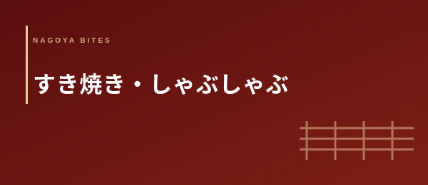

すき焼き・しゃぶしゃぶ・黒毛和牛鍋
名古屋 すき焼き・しゃぶしゃぶ おすすめ10選
【2026年版・黒毛和牛・接待・個室・記念日 業界人厳選】
すき焼きとしゃぶしゃぶ——どちらも「黒毛和牛を鍋で食べる」という行為でありながら、その体験の構造はまるで異なる。割り下に宿る甘みと醤油の複雑さか、昆布だしの透明な旨みか。名古屋では接待・記念日・家族の節目に選ばれる高単価の定番業態として長く愛されてきた。肉の仕入れ産地と等級・タレ・だしの独自性・個室と空間の完成度という3軸で、本当に使える10軒を業界人視点から厳選した。
Editor's Note — この特集の3つの選定軸
- 肉の仕入れ産地と等級：「国産牛使用」という表記だけでは評価しない。松坂牛・飛騨牛・近江牛・宮崎牛といった産地の明示、A4・A5の等級確認、月齢や飼育方法への意識を持つ店かどうかを仕入れルートから判断する。すき焼きはシンプルな調理ゆえに素材の誠実さが全体の印象を支配する
- タレ・だしの独自性：すき焼きの割り下は各店が何十年もかけて作り上げた最大の差別化要素だ。醤油・砂糖・みりん・酒のバランス、追い足しのタイミング、卵の使い方。しゃぶしゃぶではポン酢・ごまだれの品質と昆布だしの仕立てに店の哲学が出る
- 個室・空間の完成度：すき焼き・しゃぶしゃぶは接待・記念日・家族利用が中心の業態だ。個室の設計（防音・畳・掘りごたつ・坪庭の有無）、仲居サービスの質、コース進行の管理力——「場を任せられる店かどうか」が最終評価軸になる
名古屋におけるすき焼きとしゃぶしゃぶの位置づけは独特だ。東京・大阪の高級すき焼き文化と比較すると、名古屋では「割烹・料亭の延長線上にある鍋料理」として捉える感覚が根強く、個室・畳・仲居という三要素が揃って初めて「本物のすき焼き体験」と認識する店主・客の双方の意識がある。一方でしゃぶしゃぶは1990年代以降のチェーン店展開によって「家族外食のハレの日業態」として定着し、名古屋市内の広いエリアで様々な価格帯の選択肢が育った。
飲食業界の視点からすき焼き店を評価するとき、最初に見るのは「割り下の仕込み方」だ。市販の割り下を使う店と自家製で仕込む店では、肉の旨みとタレの融合度が食べ進むうちに明確に差が出る。特に後半の「残り汁でご飯を食べる」局面で、自家製割り下の深みは際立つ。名古屋では名古屋コーチンの卵を割り下に合わせるスタイルも浸透しており、土地の食材を鍋の体験に組み込む工夫が随所に見られる。栄・錦・名古屋駅・矢場町・覚王山・金山という主要エリアから、技術・素材・空間の三つが揃う10軒を選んだ。
01 — 厳選10軒
名古屋駅から徒歩5分の立地で、創業から60年以上にわたり名古屋のすき焼き文化を支えてきた老舗。初代から受け継ぐ自家製割り下は、三河産の本醸造醤油・国産みりん・種子島産粗糖を独自の配合で仕込み、一度に大量に作らず週2回の仕込みで鮮度を保つ徹底管理が特徴だ。近江牛・飛騨牛を中心に、季節によっては松坂牛・宮崎牛を取り入れる仕入れ体制は、産地から直接ルートを確保しているためで、メニューには産地・等級・部位の3点セットで明示される誠実な姿勢が業界人の信頼を集める。個室6室（2〜16名対応）はすべて畳敷き・掘りごたつ・障子という設計で統一されており、仲居が割り下の濃度管理から肉の投入タイミングまで一切を担当するサービススタイルが「客に何もさせない」という徹底したもてなしを実現している。接待・法要後の食事・取引先との会食として長年指名される一軒だ。
「割り下の深みは最初の一口ではなく、食べ終わったあとの余韻でわかる。近江屋の割り下は後半になるほど肉の旨みと混ざり合い、最後の溶き卵のときに完成する。60年積み上げた配合は簡単には真似できない。」
錦エリアの料亭街に佇む、しゃぶしゃぶ専門の一軒。昆布だしは北海道・羅臼産の真昆布を使い、前日から水出しで仕込む丁寧な工程が「だしを単独で飲んでも美味しい」と評される透明な旨みを生み出す。黒毛和牛はA5ランクの薄切りを中心に、部位によってリブロース・肩ロース・モモを選び分ける仕入れ体制で、同日のコースで食べ比べる構成も可能だ。自家製ポン酢は柚子・橙・すだちを独自比率でブレンドした3年熟成タイプを使用しており、市販品との差を明確に感じさせる品質が料理人の評価を高めている。ごまだれも自家製で、白ごまを石臼で丁寧に挽いた香りの高さが特徴だ。個室4室はいずれも防音設計で、ビジネス接待で会話の内容に気を使わずに話せる環境設計が錦エリアの接待需要を取り込んでいる。サービスは仲居スタイルで、だしの継ぎ足し・野菜の追加・コース進行の管理を一手に担う。
「羅臼昆布の水出しだしで食べるA5の薄切りリブロースは、調味料を一切使わなくてもそれだけで完結する旨みがある。しゃぶ亭 錦のだしはその体験を毎回安定して提供できる数少ない店だ。」
明治創業という歴史を持つ、名古屋で最も古い牛鍋・すき焼き店のひとつ。現代のすき焼きが「割り下をあらかじめ鍋に入れておく関西スタイル」と「肉を焼いてから割り下を加える関東スタイル」に分かれるのに対し、かわむらが守り続けるのは明治期の「牛鍋スタイル」——鉄鍋に牛脂を溶かし、肉を乗せてから醤油・砂糖・ネギを直接投入するシンプルかつ根源的な手法だ。この調理法では肉の焼きと味付けが同時進行するため、表面に軽い焼き目がつきつつ内部に旨みが閉じ込められる独特の食感が生まれる。食べ進むうちに野菜・豆腐・麩から出る水分が加わり、鍋全体の味わいが深化していく過程そのものが体験の核心だ。築100年を超える建物を改修した店内は、梁・格子窓・漆喰壁という明治・大正の意匠を残したまま使っており、その空間に足を踏み入れるだけで「名古屋の食の記憶」を体感できる稀有な一軒だ。
「現代のすき焼きのほとんどは昭和以降に標準化されたスタイルで作られている。明治の牛鍋を今も守っている店は全国でも数えるほどしかない。かわむらの価値は料理の味だけでなく、名古屋の食文化史そのものだ。」
栄エリアで割烹の格式をしゃぶしゃぶに融合させた、業界人が「接待の最高水準」と評する一軒。日本料理の資格を持つオーナーシェフが手がけるコースは、懐石料理の構造——先付・椀・向付・しゃぶしゃぶ・食事・水菓子——をしゃぶしゃぶのコースに移植した設計が特徴だ。しゃぶしゃぶの主役となる黒毛和牛の前に「季節の先付三種」「真鯛の薄造り」「焼き物」を供することで、和牛のしゃぶしゃぶが料理全体のクライマックスとして機能する構成になっている。だしは羅臼昆布と本枯れ節の合わせだしで、しゃぶしゃぶのメイン食材が変わるたびに新しいだしに取り替える「だし交換制」を採用しており、肉の脂が溶け込んだだしで野菜を食べ、最後に流れ込んだ旨みをベースにした雑炊で締めるという流れが完璧に設計されている。接待使用時は「コースの流れを接待相手に紹介する1ページの料理説明カード」を提供するサービスも行っており、ホスト側の負担を細部まで軽減する配慮が際立つ。
「しゃぶしゃぶを割烹として組み立てるためには、日本料理のコース設計力と素材の目利きが両方必要だ。万葉はその両方が一人のシェフに備わっており、食べ終わった後に『なぜあの順序だったのか』がわかる体験を作れる。」
全国展開する老舗すき焼き・しゃぶしゃぶチェーンの名古屋駅前店。業界内ではチェーン店と独立系の格差をよく語るが、木曽路については「価格帯に対する素材品質の誠実さ」が同業者から評価される数少ない例外だ。国産黒毛和牛を全店共通で使用する仕入れ基準の透明性、数十年かけて標準化された割り下のレシピ安定性、マニュアルを超えた個室サービスの丁寧さ——これらが「初めて接待でお連れする相手に外さない選択」として名古屋の多くのビジネスパーソンに認識されている。名古屋駅から3分という立地は出張者・遠方からの取引先を迎えるシーンで実質的な競争優位になる。コースのグレードが5,500円〜14,000円と幅広く、参加者の予算に合わせた組み合わせがしやすい点も幹事側に優しい設計だ。10名以上の宴会コースにも対応しており、忘年会・新年会・歓送迎会として名古屋のビジネス層に安定した需要がある。
「木曽路を『チェーンだから』という理由で選ばない飲食人がいるが、それは思い込みだ。あのクオリティの黒毛和牛を5,500円のコースで出すオペレーション力は、個人店には真似できない側面がある。」
覚王山の住宅街に構える、完全予約制・個室専用の鍋料理専門店。「すき焼きとしゃぶしゃぶを両方置かない」という潔い一店一鍋の哲学を持ち、季節によって提供する鍋のスタイルを変える——秋冬は松坂牛のすき焼き、春は白老牛のしゃぶしゃぶ、夏は岐阜産鮎の塩鍋というように、素材の旬と産地に連動してメニューが変化する設計だ。個室は3室のみで、いずれも坪庭を望む設計の和室（2〜6名対応）。坪庭の季節植栽は毎月手入れが入り、蹲（つくばい）と敷石のある設計が「庭を眺めながら食べる」という体験を鍋の場に持ち込む。松坂牛のすき焼きを提供する際は、肉の購入経路・枝番・等級を記した「仕入れ証明カード」を食事の前に提示するというこだわりが、素材への真摯な姿勢を示している。業界人・食通・著名人の利用も多く、「名古屋で最も予約が取れない鍋料理店」として口コミで知られる。
「鍋料理をメニューに並べる店は無数にあるが、季節ごとに一種類だけを出す覚悟を持つ店は極めて少ない。雅はその覚悟が坪庭の設計から仕入れ証明カードまで一貫していて、嘘がない。」
錦エリアで「A5ランク黒毛和牛のすき焼きに特化する」というシンプルな哲学を持つ一軒。取り扱う牛肉はA5ランクのみで、B・A4のグレード品は一切使わないという仕入れ方針が価格の上昇を招く一方で、素材の均質性という圧倒的な安定感を生み出している。自家製割り下は大吟醸・本みりん・たまり醤油をベースに仕込む「旨みの強い甘辛系」で、A5の霜降りが溶け出す脂と割り下の糖分が絡み合う後半の濃厚な旨みを最大化する設計だ。名古屋コーチンの有精卵を必ず提供するというこだわりは「A5の肉と名古屋の卵」という産地のコラボレーションを意識したもので、黄身の濃さがA5の脂感をまろやかに包む体験は一度食べると忘れられない。カウンター席（8名）と個室（1室・4〜6名）という構成で、カウンター越しに仲居が割り下を管理しながらすき焼きを仕立てるスタイルが「見せる接待」として好評を得ている。
「A5に絞ることのリスクは価格だが、その分の説明責任を千草は全うしている。割り下の設計がA5の脂質に最適化されていて、A4以下では実は成立しないバランスだ。素材とタレが本当に対になっている店。」
全国展開するしゃぶしゃぶ専門チェーンの名古屋栄店。業界人の視点でチェーン店を評価するとき、「その業態の間口を広げることへの貢献」という観点を持つ必要がある。温野菜はしゃぶしゃぶというジャンルを「特別な日の高価な食事」から「日常的に家族が囲める食卓」に引き下げた功績が大きく、野菜の種類と新鮮さへのこだわりは独立系しゃぶしゃぶ店と比較しても引けを取らない。野菜ソムリエが監修した野菜の盛り合わせは品種・産地の説明付きで提供され、「野菜の種類を知ってから食べる」という体験が子供の食育にも機能している。食べ放題コースの最上位グレードは国産牛を使用し、栄エリアのランチ需要や学生・若い世代のグループ利用を吸収している。「老舗すき焼き店に行く前に家族でしゃぶしゃぶの楽しみ方を覚える場所」という機能を担っており、名古屋のしゃぶしゃぶ文化の裾野を広げる役割で評価している。
「高単価の老舗店が輝くためには、ジャンルの底辺を広げる役割が必要だ。温野菜はその役割を担ってしゃぶしゃぶ人口を増やした。批判する飲食人がいるが、彼らの店の客の一部は温野菜から上がってきている。」
本山エリアで日本料理の技術をすき焼きに融合させたオーナー割烹の一軒。店主の伊藤氏は名古屋の老舗割烹で20年以上修行した後、「愛知の食材でつくる最高のすき焼きを」という目標のもと独立した。飛騨牛を主体に、季節によっては愛知産の和牛（三河牛）も取り扱い、地元の食材へのこだわりが名古屋・知多・三河産の野菜・豆腐・麩の選択にも反映されている。割烹として提供するすき焼きコースは、先付・椀・造りを経てすき焼きに至る流れを持ち、コースの途中で供される「三河の赤だし椀」は地元の食を意識した心憎い一品だ。〆の「すき焼きごはん」は割り下を吸わせた炊き込みごはんで、日本料理的な余韻の設計が光る。カウンター6席・個室1室という構成で、オーナーシェフ自身がすき焼きを仕立てる姿を間近で見られるカウンター席の人気が高い。本山という住宅街エリアの静けさが「特別な食事」の空気感を醸成している。
「三河牛で作るすき焼きという選択は、地元産地への誠意だ。飛騨・松坂・近江というブランドに頼らず、愛知県内の農家と直接取引して牛を確保しようとする姿勢がいちふじを他の割烹と分けている。」
金山駅から徒歩4分の立地で、ランチタイムのすき焼きが特に評判の鍋専門店。名古屋では「ランチで本格的なすき焼きを食べられる店」が極めて少ない中、ふじ乃は2,200円からのランチすき焼きを提供し「平日の特別なランチ」という新しい使い方を金山エリアに定着させた。ランチコースは国産黒毛和牛（A3〜A4）を使い、割り下・卵・ご飯・香の物が付く構成で、仕事の合間に30〜40分で食べられる進行の速さが週1〜2回利用するリピーターを生んでいる。ディナーはA4〜A5の黒毛和牛を使ったすき焼きコース（6,000円〜14,000円）に加え、しゃぶしゃぶ・水炊きのコースも用意しており「鍋専門」という業態の幅広さが家族・グループ利用のニーズを柔軟に受け止める。個室（2〜8名・3室）は記念日・誕生日・家族の節目として定期的に指名される設計になっており、「金山に来たら必ずふじ乃」というリピーター家族が複数いることが客の定着度の高さを示している。
「ランチすき焼きという概念を金山に根付かせたのはふじ乃の功績だ。2,200円で国産黒毛和牛のすき焼きを食べられる体験は、夜の高単価店への入口として機能している。ランチのコスパが夜の常連を育てる構造だ。」
名古屋の「牛肉文化」と松坂牛・近江牛・飛騨牛の使い分け【業界人コラム】
名古屋の飲食シーンで「どの産地の牛を使っているか」は、店の格付けを判断する重要な指標として業界人の間で長く機能してきた。この「産地を問う文化」は、名古屋が三大ブランド和牛の産地に近接しているという地理的条件から生まれている。松坂牛（三重県松阪市）は名古屋から車で1時間強という近さで、「本物の松坂牛」にアクセスしやすい最も近い大都市として名古屋の老舗料亭・すき焼き店が古くから仕入れルートを確保してきた産地だ。
飛騨牛（岐阜県飛騨地方）は名古屋から1.5〜2時間という距離で、岐阜・飛騨との食文化の繋がりが深い名古屋にとって最も身近なブランド和牛として定着している。飛騨牛は松坂牛と比べて牛の個体数が多く安定供給がしやすいため、年間を通じた仕入れに安定感がある。等級はA5が全体の約30〜40%を占めており、脂の甘さと赤身のバランスが「すき焼きに最適な和牛」として料理人から評価される機会が多い。
近江牛（滋賀県近江地方）は歴史的に見ると日本最古のブランド和牛のひとつであり、江戸時代から彦根藩が将軍家への献上牛として管理してきた経緯を持つ。名古屋の老舗すき焼き店（近江屋 名古屋本店のような店名がそれを象徴する）が近江牛を使うのは、この歴史的な価値づけへの敬意と、「関西由来の食文化を受け継ぐ名古屋」という文化的アイデンティティが重なっているからだ。近江牛は脂質の質がきめ細かく、割り下の甘辛さとの相性が特に良いと評される。
業界人が3産地の使い分けを語るとき、最終的に行き着く答えは「その日に入った最高のものを使う」という至極シンプルなものになる。ブランドは入口であって、同じ「飛騨牛A5」でも個体によって脂の乗りと肉質は全く異なる。産地証明と等級が同じでも「どの個体か」「何歳か」「どこで育ったか」という情報まで把握して仕入れる店と、産地名だけで仕入れる店の差が、すき焼きとして食べるときにはっきりと出る。名古屋の本物のすき焼き店を選ぶ基準として、「産地を言えるかどうか」と同等以上に「その産地のどの個体を使っているか」を聞ける店かどうかを確認することを、業界人はすすめている。
すき焼きとしゃぶしゃぶ、どちらを選ぶべきか — シーン別ガイド
- 接待（初対面・重要取引先）→ すき焼き推奨：仲居が場を管理してくれる老舗すき焼き店は、ホスト側が「料理の進行」を気にせず会話に集中できる構造を持つ。割り下の甘辛い香りと卵を使うアクションが会話の自然なきっかけになりやすい
- 接待（関係ができている相手・食通）→ しゃぶしゃぶ推奨：しゃぶしゃぶは「だしの繊細さ」「肉の質」「ポン酢の独自性」を語る余地が大きく、料理を肴にした会話が展開しやすい。割烹しゃぶの店は料理の解説力が高く、接待相手に「勉強になった」と思わせやすい
- 記念日・誕生日（2人）→ しゃぶしゃぶ推奨：しゃぶしゃぶは「自分でしゃぶする」動作が2人の食事に参加感を生み出す。お互いに肉を入れてあげる行為が親密さを高めやすく、個室のしゃぶしゃぶ店は空間設計も含めて2人向きが多い
- 家族の節目（3世代）→ すき焼き推奨：すき焼きは割り下の濃い味わいが子供から祖父母まで万人に受け入れられやすい。鍋を囲む形式が家族の会話を促進し、「仲居が取り分けてくれる」サービスが食事に不慣れな子供や高齢者の参加を助ける
- コスパ重視の社内宴会・懇親会 → 食べ放題しゃぶしゃぶ推奨：温野菜等のチェーン系しゃぶしゃぶは食べ放題コースが充実しており、大人数でも予算管理がしやすい。野菜の充実度が高く、健康・ダイエット意識の参加者も満足できる構成
- 出張者・県外取引先への名古屋体験 → 牛鍋スタイル推奨：明治期の牛鍋スタイルを守る店（牛鍋 かわむら等）は「名古屋でしか食べられない食文化」として希少性が高く、食体験としての記憶に残りやすい。「名古屋の食を体験させた」という接待の目的に合致する